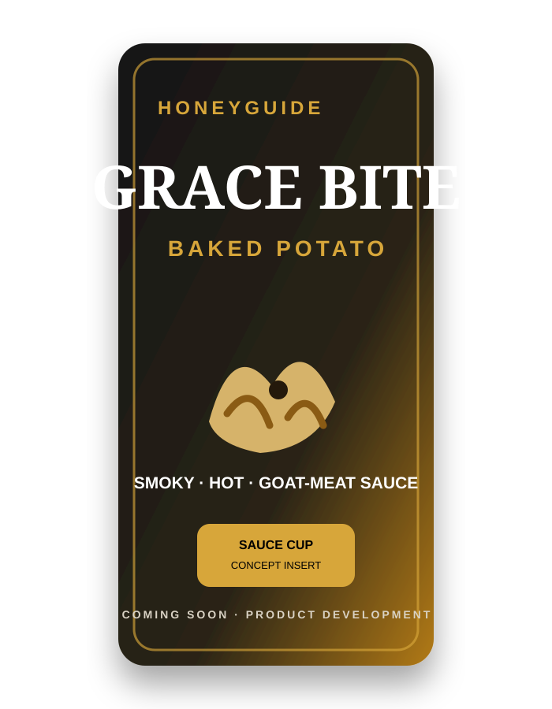

Grace
Bite.
A planned baked-potato chip concept paired with a smoky, hot goat-meat sauce portion designed for dipping/touching the chips.
The concept is intended to create a distinctive eating experience: baked potato chips with a rich savoury goat-meat sauce component. Final formulation, sauce stability, packaging architecture, food safety, shelf life and production method require R&D and validation.
After Macdon’s,
another idea.
Grace Bite sits on the planned product-development roadmap after the initial Macdon’s Chips launch and validation work.
Macdon’s Chips
Launch sweet-potato chips with Chili & Lemon, then develop Cheese & Onion.
Grace Bite development
Research baked potato chip texture, smoky/hot goat-meat sauce formulation, portioning and packaging.
Safety & shelf-life work
Test the complete product system before making commercial, shelf-life or nutritional claims.